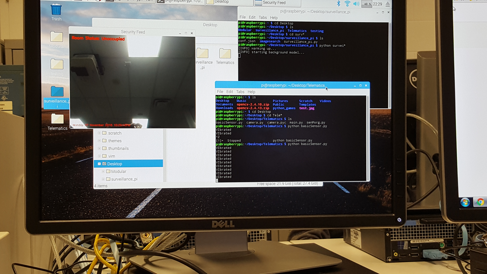

Week 8
Placard
Presentation
BuildVideo
Progress Report
Current Progress
Currently I'm a bit behind on my planned schedule. Since we added gps on our hardware, we have to update our circuit board and print it.
This week, we have decided to print the circuit board and solder the compnents into the PCB. We are also going to create a case for our Hardware.
In terms of coding, we are currently on schedule and have a working code that can be use to demonstrate for our final interview next week.
Problems/Opportunites
At the moment, we are facing a couple of problem. One of them is our circuit board. We have not print and solder it yet. The other problem that we are facing is the GPS. We are currently having a finincial problem.
Solutions
In order to overcome our problem on our circuit, we are going to finish our hardware before the end of this week.
And for our gps, we are going to print our circuit board that has gps input and output but we are not going to show it on our next week presentation.
Financial Update
At the moment, we already spent more than what we have anticipated. With the gps, we are corrently looking on adding another $50 on our budeget. We have also spent $90 on our Mobile application for web hosting because we have to implement video on our mobile application.
Progress Report
Current Progress
Based on our scheduled plan, we are right on schedule. Since last week, i have added more funtion into my camera and sensor which can be used for our final product. I added a notification method. In this method, if the sensor sense any vibration, it will send an email notification. I also implemnted the same method for the camera, so whenever it detects any movement, it will send a picture to the user through email.
At this point, we are planning on adding a gps. So whenever the sensor is triggered, it will get the current coordinate of the raspberry pi which can be used to determine the location of the accident.
Problems/Opportunites
At this point, we have not faced any problems with our project. On the other hand, since we are on our schedule, we are able to add more features to our project.
Financial Update
As mentioned earlier, we are planning on adding a gps for our project. Based on our previous budget proposal, we did not include a gps module. Further update about the gps module will be posted later on.
Progress Report

Current Progress
We are currently on schedule. Our hardware are working properly. Today we are going to demonstrate our vibration sensor and raspberry pi camera.The vibration is is able to detect any vibration. I also added some codes where it will prevent the sensor from detecting any further vibration that comes from the same source. For the camera, I implemented more codes in order to detect any motion detection. I also made a separate codes where the camera pi is able to capture the vdeo, record it and save it to a specific folder.
Problems/Opportunites
We had an opportunity to showcase our project today to our classmates. All of the feedback about our project so far are all positive.
Financial Update
All of the item that we purchased are within the budget.
Build video
Progress Report

Modular Sensor Board
Current Progress
We are currently behind from our schedule. According to our schedule,
we should be starting on our hardware and software project. However,
we have received a huge load of assignments and project from several of
other courses, therefore we cannot follow our schedule.
Solution
In order to make it up, we are going to work on our project with our spare time.
At home, we can start on software part since we do not need any equipment on this part.
And for hardware, can come in early or stay later if needed to finish the hardware base on our schedule.
Financial Update
All of the item that we purchased are within the budget. Some of the extra hardware are not purchased right away as they are not needed for our progress. Further update will be posted on github.
Grant Chart
Proposed Telematics.
Members:

Raspberry Pi LED Green light

Raspberry Pi LED Red light